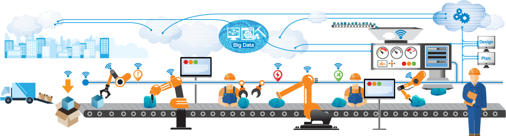
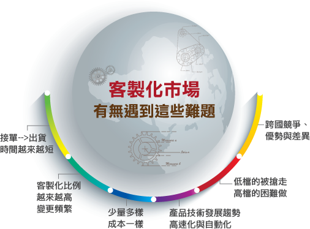

經濟部落實台商回流衝智慧製造
2019/11/24 中時電子報經濟部投資業務處參事章遠智11/13在台商權益座談會上指出，受到中美貿易戰影響，台商今年返台投資金額大增，申請回流金額將突破7000億，預估到年底可以落實1900億；經濟部要求申請台商必須要有智慧化元素在內，不管是製造業或服務業，特別是「智慧製造」和「工業4.0」，經濟部都會詳細審閱及派人到現場了解，就是希望把台灣定位為高階產品製造中心，把台灣打造成為智慧製造的基地，重新建立台灣完整的產業供鏈鏈。
業界對工具機產業發展之期許：發展中高階工具機 著眼客製化
中時電子報發展中高階工具機的客製化應用，應可以台灣內需的作為練兵的市場，例如：航太領域。以台中精機為例，公司投入多年研發與台灣航太發動機供應鏈合作，並且成立「顧客創值應用中心」，不斷以客戶需求為導向，強化應用技術的研發，現已打入漢翔、長亨等業者供應鏈之高階零件。
研討會資訊

從市場參賽者到規則制定者，重塑產業競爭邊界－東野精機案例分享
成立超過二十年的東野精機，於「鋁擠型」產業中深耕技術與服務，逐漸累積業界知名度。 面臨近年市場的激烈競爭，如何不落於紅海成為東野下一步策略佈局的重要關鍵， 以優化產品與重整形象著手，東野精機展現蛻變決心，更結合從設計、加工、組裝到技術的 「一條龍」服務機制，從鋁擠加工商轉向OEM、ODM生產的專案設備解決方案，再創公司 營收新高！ 本次研討會邀請東野精機擁有從加工至專案設備的各類訂單，如何有效生產並達成與客戶的承諾「如期、如 質」成為重要課題。透過資訊化建立創新「減法」管理，運用數據串聯做到有效監控，並打 造出與傳產廠房有明顯差異的精緻生產模式，由內而外讓客戶見證東野獨到的生產樣貌。東 野精機有了高效運營支持，未來便能挑戰更高營收動能，持續締造產業佳話
客戶證言
游董事長：「考慮業界口碑，我們只選擇最有名的品牌及持續成長的系統商！」
─ 生產空氣壓自動化零組件 台灣氣立股份有限公司
林協理說：「別輕忽客戶維修履歷的重要性。」
─ 工具母機 台灣瀧澤
林敏正執行長：「對鳳記來說，最重要的就是備料與報價。」
─ 塑膠押出機設備製造商 鳳記國際機械
「高層說要讓製造工程師打單?? 這怎麼可能?? 」
─ 半導體零組件加工生產 翔名科技
吳特助：「以前當榮富的主管或使用者提出需求時，總以為系統無法做到，只能認命的將ERP報表轉到Excel做加工。」
─ 鑽銑複合機和鋸床 榮富工業
紀總經理：「對品牌而言，維修服務部門是公司很重要的單位，我們希望維修師出任務時可自行解決大部份問題，無須再透過電話查詢庫存、確認需求，既無時效也耗費成本。
─ 品牌銷售與售後維修子公司 奇美集團
- 1
- 2